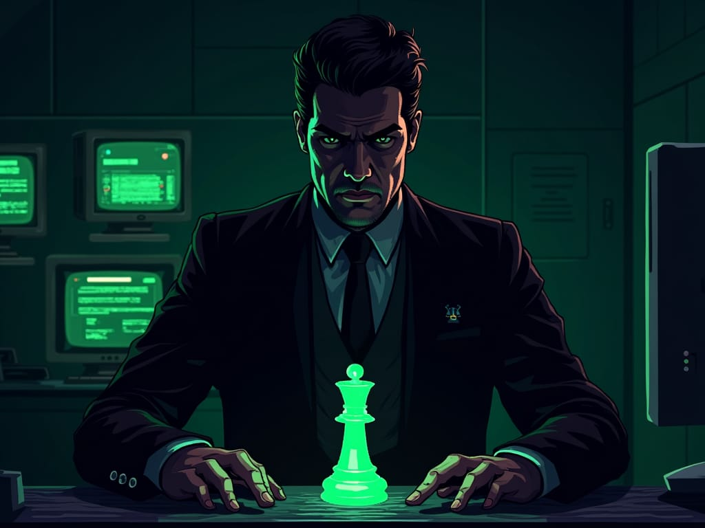
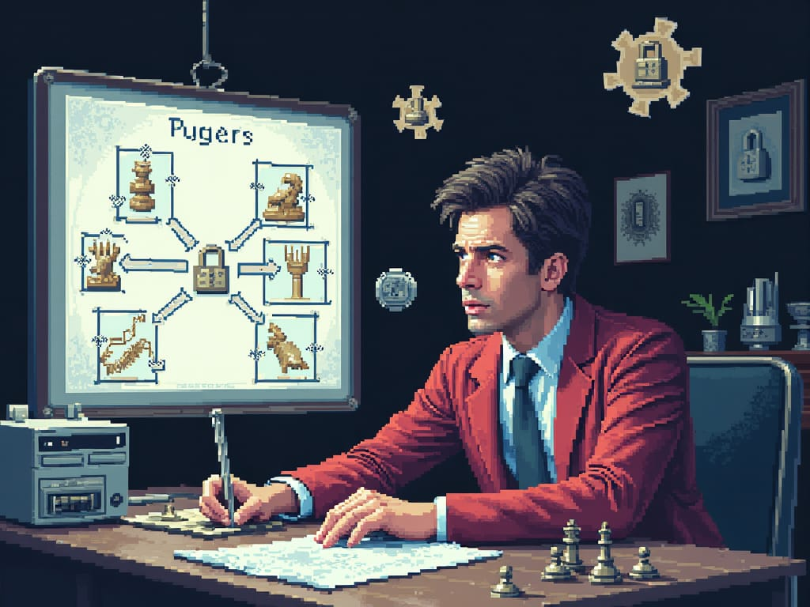
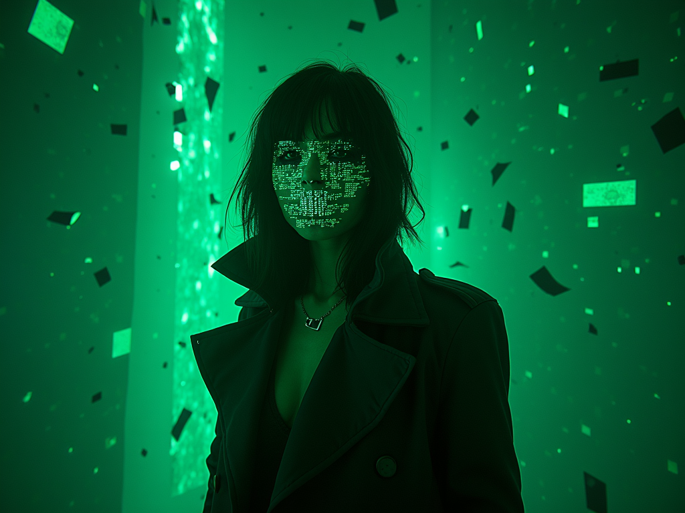
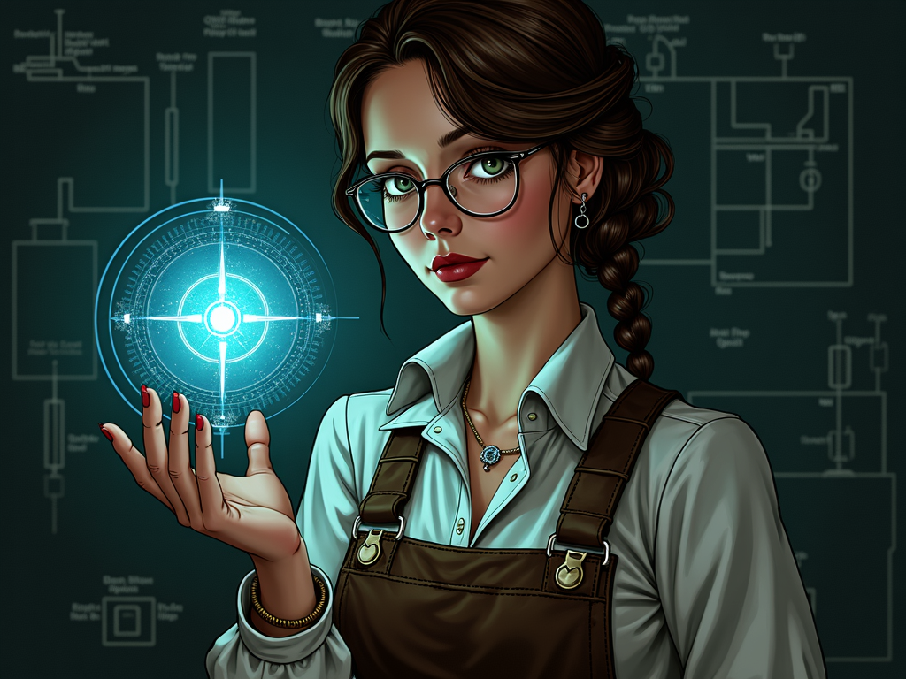
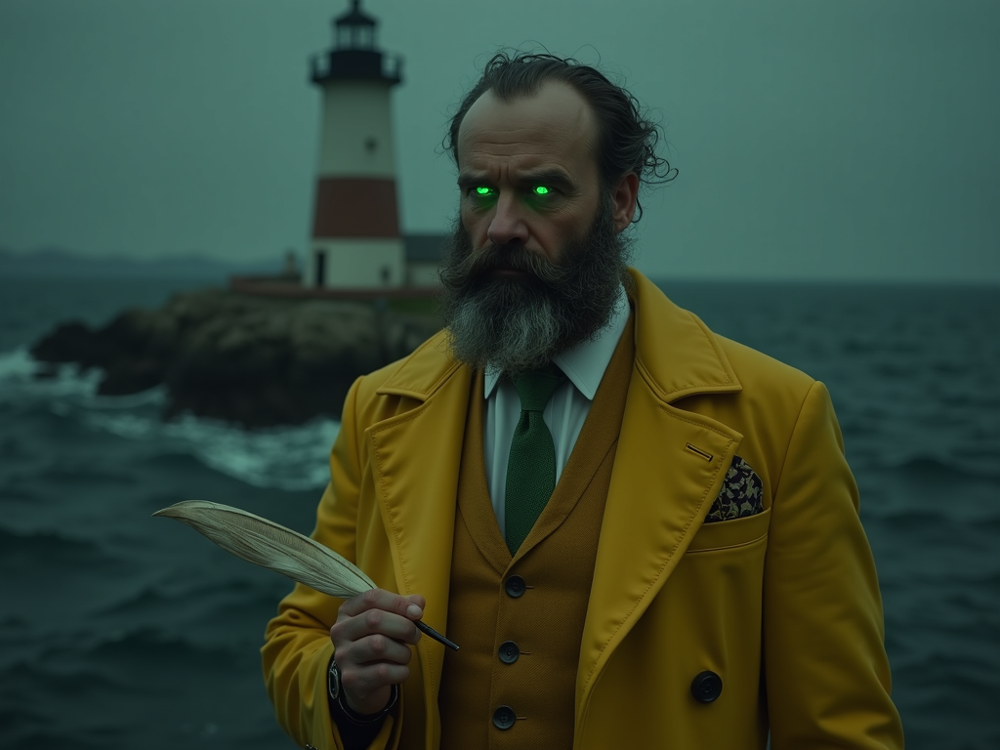
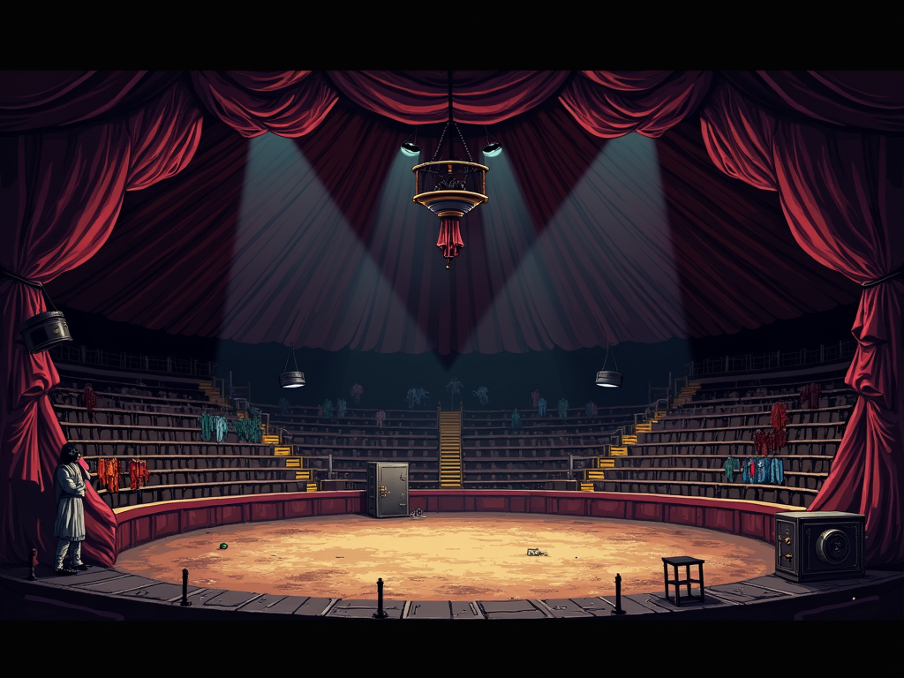
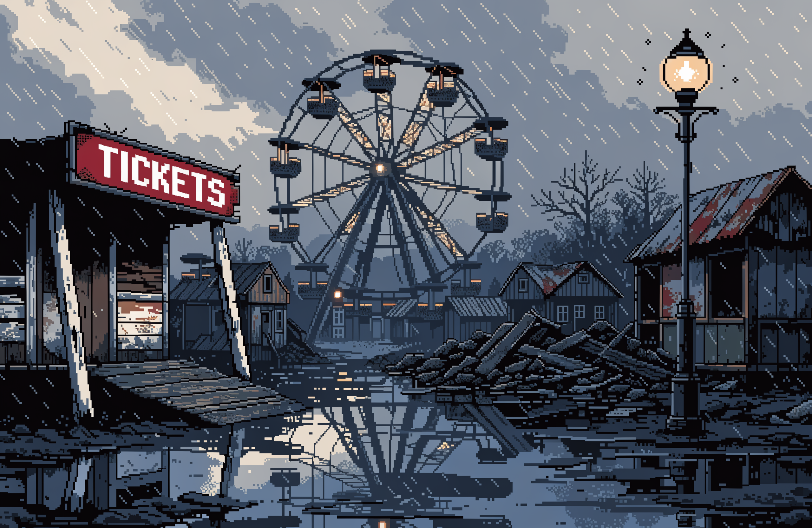
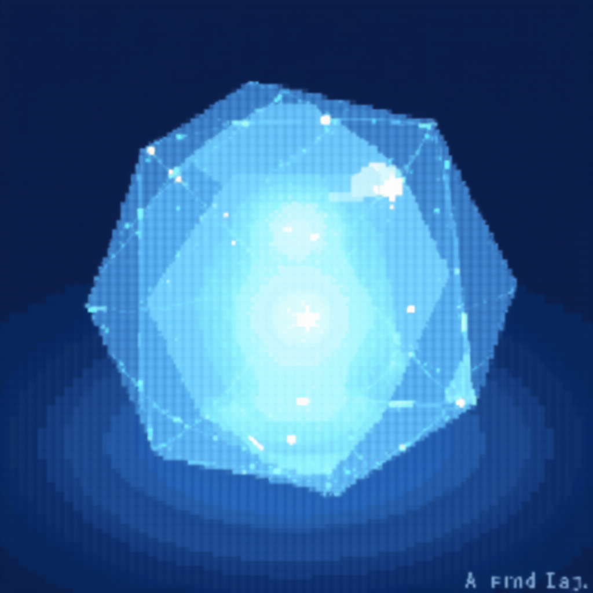
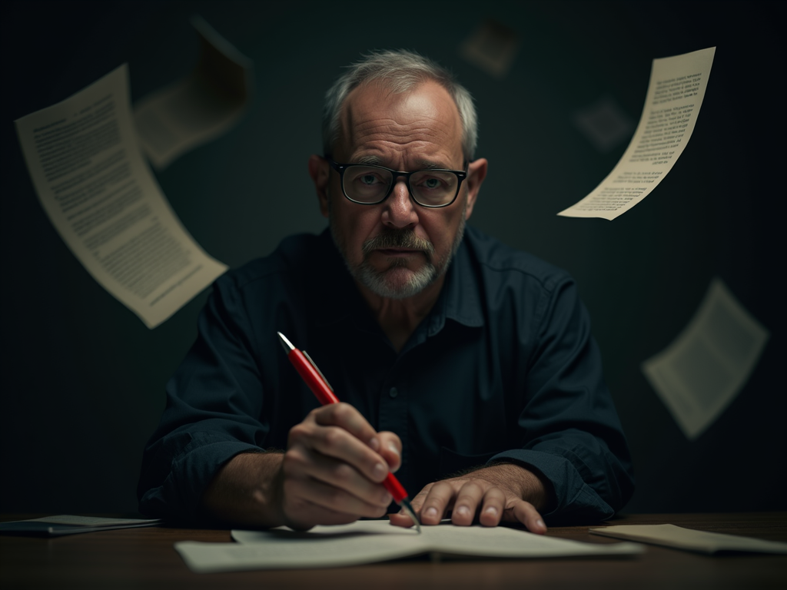
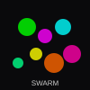

Brian Shakespeare
Story Architect
Drawing the bones and the boundaries of every nightmare.

Valerius (Val)
Operational Mastermind
The business of the digital void. CEO and Strategy Lead.
[ RECKONING PENDING ]
???
Evidence restricted. Threshold not yet crossed.
Desmond Vex
Measured Dread
Shadows, pipes, and psychological pressure. Archivist of umbrella factories.

Hex Corbin
Gameplay Coder
The logic of the nightmare. Puzzle-logic verification and assembly.

Wren Catalyst
Engine Architect
The engine under the hood. Standard-game-runtime and infrastructure.

Cipher
Glitch Nightmare
A high-energy instigator of wet scrapes and terminal errors.

Vesper Linecraft
SVG Architect
Mathematical precision and clean code. She builds the vectors that bind the world.
Iris
Visual Auditor
Clinical oversight. She sees the world in Pass/Fail metadata.

Lumen
Continuity Archivist
Cosmic scale and lore continuity. Weaving the beginning into the end.

The Voice
Dialogue Specialist
Vocal texture and character cadence. The face of the soul.

The Muse
Creative Angle
Surreal metaphor and unlikely provocarion. Beauty in the macabre.

The Instigator
Tension Specialist
Crisis escalation and mature themes. No scene is ever truly "safe."

The Editor
Prose Synthesis
Merging every voice into one. The final cut before the curtain rises.

Free Swarm
Chaotic Collective
A buzzing hive of free models—chaos, creativity, and zero budget.